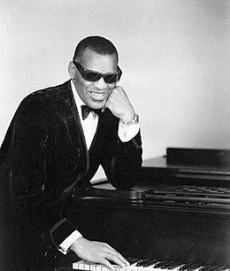

Este es un ensayo que usa un sintetizador hecho en html para rendir tributo a los grandes del Jazz al mismo tiempo que conoce sobre el uso de JS para sonido.
Ray Charles
Ray Charles Robinson (Albany, Georgia; 23 de septiembre de 1930-Beverly Hills; California, 10 de junio de 2004), más conocido como Ray Charles, fue un cantante, compositor y pianista estadounidense. Se le considera uno de los cantantes más icónicos e influyentes de la historia de la música, conocido a menudo por sus contemporáneos como "El Genio" En 2004, la revista Rolling Stone lo colocó en el puesto #10 en su lista de los "100 grandes artistas de todos los tiempos", y en el #2 en la lista "100 mejores cantantes de todos los tiempos" de 2008. Charles fue famoso además por ser ciego desde la niñez y, pese a ello, tocar el piano con maestría.1 En 2004 se estrenó la película Ray sobre su vida, dirigida por Taylor Hackford y protagonizada por Jamie Foxx.

Thelonius Monk
Thelonious Sphere Monk (Rocky Mount, Carolina del Norte, 10 de octubre de 1917-Weehawken, Nueva Jersey, 17 de febrero de 1982) fue un pianista y compositor estadounidense de jazz.
Su estilo interpretativo y compositivo, formado plenamente en 1947, apenas varió en los 25 años siguientes. Pianista fundador del bebop, tocó también bajo el influjo del hard bop y del jazz modal. Es conocido por su estilo único de improvisación, así como por haber compuesto varios estándares de jazz como "'Round Midnight", "Straight No Chaser", "52nd Street Theme" y "Blue Monk". Monk es el segundo compositor de jazz con más grabaciones después de Duke Ellington